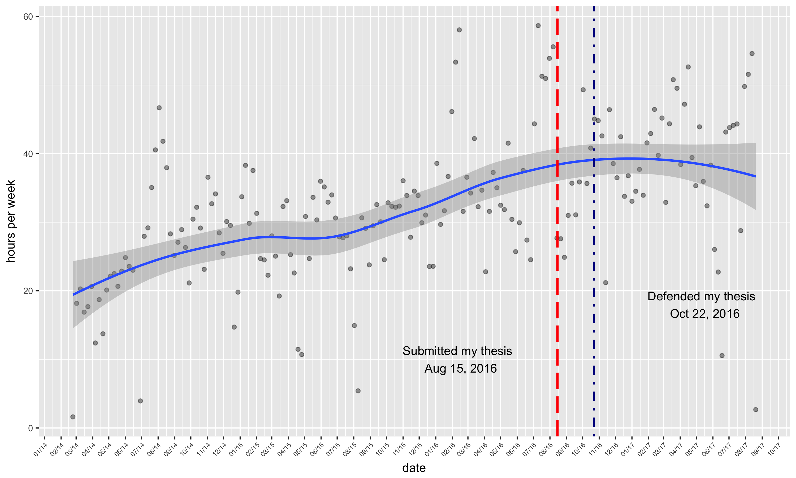

August 30, 2017
Post written by Erika
During my studies, I struggled to evaluate my productivity. The research years of my PhD were long and lacked structure. It felt as though I spent every day sitting in front of my computer slowly chipping away at the amorphous blob that was my thesis. I discovered Rescue Time and it totally changed my life! It’s an app that you can run on your desktop that tracks which ever active window your working on. All of a sudden, I had a concrete estimate of how much time I was spending browsing Reddit or watching Youtube videos. I’m happy to shell out the $70/yr fee for the pro version, which allows you to track offline time (such as time spent reading or in meetings). But my favorite feature is the ability to download the data. I’ve plotted my hours worked per week for the past 3 years. The results weren’t surprising. In 2014, while I was about mid-way through my PhD, I probably struggled the most. At that point, my project still felt undefined and I was spending a lot of time simply trying to conceive of something 1) relevant, 2) interesting and 3) feasible. Don’t be fooled - that trifecta is quite difficult to achieve. In any case, my productivity varied tremendously. Especially since I was also spending considerable time TA’ing and RA’ing on different projects unrelated to my own work (these hours are reflected here). But it looks like the pace picked up in the months leading up to my thesis submission. Best of all, I’ve maintained some pretty good numbers since then.
